1. Introduction
A vast group of automated weather sensors cover the state of Iowa. There are three different networks throughout the state. One network, overseen by the Iowa Department of Transportation, is the Roadway Weather Information System (RWIS), which are located near interstates and highways (Iowa Department of Transportation 2001). The other two networks, the Automated Weather Observation Station (AWOS) and the Automated Surface Observing System (ASOS), are located at airports throughout the state (Department of Agronomy & Iowa State University 2001). This report focuses on the comparison of the reported overnight low temperatures at RWIS and AWOS/ASOS sites in close proximity to one another. The cities of Ames, Cedar Rapids, Creston, and Decorah were chosen for the study. I believe that after testing the differences in the overnight low temperatures between the RWIS and AWOS/ASOS sites, at each city, the results will not be significantly different.
2. Data
The data was obtained from the Iowa Environmental
Mesonet archive. The length of the
sample is from 1 June 2001 through 7 November 2001. The data was sorted to
obtain the overnight low temperatures that occurred at each site. The temperatures are reported in °F since this is the way they are recorded and
reported at the mesonet site. The
overnight low temperature had to occur between six and twelve Universal
Coordinated Time (UTC). Starting in
October the time scale was lengthened to include 13 UTC when more overnight low
temperatures tended to occur.
The
data was then separated in to five different categories. The first category was all the data obtained
for the study. The next category was overnight low temperature data where the
reported cloud coverage was less than 50% of the sky. The next category was when the overnight low temperatures were recorded
with cloud coverage being reported at 50% or greater. The amount of cloud cover was recorded at the RWIS sites. The
next group was overnight low temperature data when the wind speed was less than
5 knots at both sites. The final
grouping was when the recorded overnight low temperatures were observed with
wind speeds 5 knots or greater at both sites.
The wind speed, in the last two groups, was recorded at the same time
that the overnight low temperature was recorded.
To meet the
requirement for a usable sample a category had to have no less than 30 events
included. The mean temperature for each
sensor was calculated along with the difference in mean temperatures between
the two sensors. A two-sample t-test
assuming equal variances was performed on the data sets to test for
significance. No initial difference was
assumed and a two-tail P-value was calculated.
If the P-value was less than .05 it was it was determined that it was
not possible for the samples to have this difference randomly. These data sets were assumed to have a
significant difference between them.
3. Results and Discussion
a. Ames, Iowa
The RWIS sensor has an elevation of 313 meters above
sea level and is located near Interstate 35 east of town. Specifically it is located at latitude 42° 1’ 48” N and longitude 93° 34’ 12” W.
The ASOS sensor has an elevation of 280 meters above sea level and is
located at the airport south of town.
The site is located at latitude 41° 59’ 24” N and longitude 93° 37’ 12” W.
These two sites are separated by 6.12 kilometers with the RWIS sensor
being 33 meters higher in elevation than the ASOS sensor. The data was obtained from 1 June 2001 to 7
November 2001. There is missing data
from 14 June 2001 through 7 August 2001.
1) Combined data
There were 96 nights where the overnight lows
matched the criteria listed above for usable data. The RWIS site had a higher overnight low temperature 85 out of
the 96 nights. Subtracting the ASOS
overnight low temperatures from the RWIS overnight low temperatures can be seen
in Fig. 1.
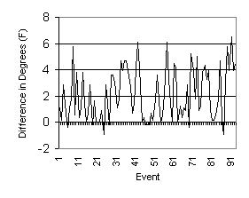Fig. 1. RWIS overnight low temperatures minus ASOS overnight low temperatures.
The
RWIS sensor recorded, on average, an overnight low temperature 2.07 °F warmer than the ASOS sensor. The largest difference was recorded on 4
November 2001 when the RWIS sensor recorded an overnight low temperature 6.48 °F warmer than the ASOS sensor. On nine occasions, or approximately 9% of
the time, both sensors recorded the same overnight low temperatures. There was a two-tail t-test performed on the
data and it yielded a P-value of .23.
This means that there is a 23% chance that the differences in the two
data sets occurred randomly. This is
larger than the 5% standard so there is no significant difference between these
two data sets.
2) Cloud coverage less than 50%
Of the 96 observed events, for the Ames sites, 57 had recorded cloud coverage that was less than 50% of the night sky as seen in Fig.2.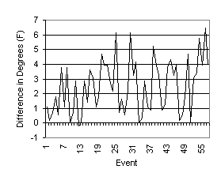
Fig. 2. RWIS minus ASOS with cloud coverage less than 50%.
The
RWIS sensor recorded an overnight low temperature that averaged 2.48 °F warmer than the ASOS sensor. This difference is .31 °F warmer than the mean for all overnight low
temperature data collected for Ames. When
doing a two-tail t-test on the data sets a P-value of .32 was calculated. There is a 32% chance that the difference in
the two data sets occurred randomly. Thus there is no significant difference
between the RWIS data and the ASOS data when the cloud coverage is less than
50%.
3) Cloud coverage greater than or equal to 50%
Of the 96 events 39 of these occurred when cloud
cover was recorded at 50% sky coverage or greater as seen in Fig. 3. 
Fig. 3. RWIS minus ASOS with cloud coverage greater than or equal to 50%.
The
RWIS sensor recorded on average an overnight low temperature that was only 1.55
°F warmer than the ASOS sensor. This is .52 °F lower than the mean of all
data collected for Ames. When a
two-tail t-test was performed a P-value of .41 was calculated. There is a 41% chance that the differences
between these two data sets occurred randomly.
There is no significant difference in the overnight low temperatures at
the RWIS and ASOS sites when the cloud coverage is 50% or greater.
4) Wind speed less than 5 knots
There were 48 events during the sample where both
the RWIS and ASOS sensors recorded wind speeds less than 5 knots when the
overnight low temperatures were recorded as seen in Fig. 4.
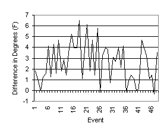 Fig. 4. RWIS minus ASOS with wind speeds less than 5 knots.
The
RWIS sensor recorded on average overnight low temperatures that were 2.6 °F warmer than the low temperatures the ASOS
sensor recorded. This is .53 °F warmer than the average
for all overnight low temperature data from the Ames sample. A two-tail t-test was performed on the data
sets and revealed a P-value of .29. There is no significant difference between
the overnight low temperatures recorded at the two sites when the wind speed is
less than 5 knots.
5) Wind speed 5 knots or greater
There were 32 events when the overnight low
temperature was recorded that both sites had wind speeds 5 knots or
greater. The differences in the
overnight low temperature between the two can be seen in Fig. 5.
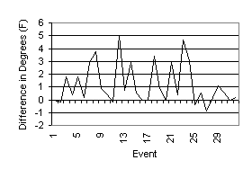
Fig. 5. RWIS minus ASOS with wind speeds 5 knots or greater.
The
RWIS sensor recorded an overnight low temperature, on average, only 1.17 °F warmer than the ASOS sensor. This is much lower than the 2.07 °F difference recorded for all Ames data. A P-value of .71 was observed showing that
there is no significant difference in the data recorded at these two sites.
6) Ames conclusion
There was not a significant difference in the data
recorded by the RWIS and ASOS sensors.
There were times when the recorded overnight low temperatures were
closer at the two sites. When recorded
wind speeds were 5 knots or greater the average temperature difference was only
1.17 °F.
These greater wind speeds could nullify the elevation difference between
the two sites by creating a well-mixed layer of air above the ground. The RWIS site is over 32 meters above the
ASOS site. When the air is well mixed
the cooler air is not as likely to collect at lower elevations.
b. Cedar Rapids, Iowa
The RWIS sensor has an elevation of 246 meters above sea level and is located near Interstate 380 next to the Cedar River in town. It is located at latitude 41° 58’ 48” N and longitude 91° 40’ 12” W. The ASOS sensor is located at the airport south of town and has an elevation of 265 meters above sea level. Specifically the site is located at latitude 41° 52’ 48” N and longitude 91° 42’ W. These two sites are separated by 11.43 kilometers with the ASOS sensor being 19 meters above the RWIS sensor. The data for Cedar Rapids was gathered from 1 June 2001 through 7 November 2001.
1) Combined data
There were 133 events during sample period where the criteria for overnight low temperature data was met at both locations. The RWIS site recorded an overnight low temperature warmer than the ASOS sensor every night as can be seen when the ASOS temperature is subtracted from the RWIS temperature in Fig. 6.
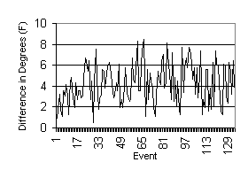
Fig. 6. RWIS overnight low temperatures minus ASOS overnight low temperatures.
The RWIS sensor recorded an overnight low temperature that was 4.27 °F warmer than the ASOS sensor recorded on average. The largest difference was recorded on 14 August 2001 when the RWIS overnight low temperature was 8.46 °F warmer than the ASOS overnight low temperature. The two sensors were the closest on 3 July 2001 when the difference was only .54 °F. A two-tail t-test was performed on the two data sets and it yielded a P-value of .004. This shows that there is a significant difference between the two data sets and will be commented on later in the text.
2) Cloud coverage less than 50%
Of the 133 recorded overnight low temperatures 101 occurred with less than 50% cloud coverage. The overnight low temperature from the ASOS site was subtracted from the overnight low temperature from the RWIS sensor in Fig. 7.
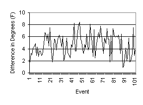
Fig. 7. RWIS minus ASOS with cloud coverage less than 50%.
The RWIS sensor recorded an overnight low temperature that was 4.68 °F warmer than the ASOS sensor. This is larger than the average of all Cedar Rapids data by about .4 °F. A two-tail t-test was performed and the result was a P-value of .007. This means that there is only a .7% chance that these differences occurred randomly and that there is a significant difference between these two data sets.
3) Cloud coverage greater than or equal to 50%
Out of the 133 events 30 of these occurred when the reported cloud coverage was greater than 50%. The differences in the overnight temperatures can be seen in Fig. 8.
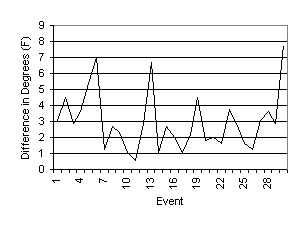 Fig. 8. RWIS
minus ASOS with cloud coverage 50% or greater.
The RWIS sensor, on average, recorded an overnight low temperature that was 2.99 °F warmer than the ASOS sensor. This is 1.28 °F lower than the average for all the data from Cedar Rapids. The two-tail t-test revealed a P-value of .34. This implies that there is a 34% chance that the differences observed in the two data sets occurred randomly. There is no significant difference in the data when the cloud coverage was 50% or greater.
4) Wind speed less than 5 knots
There were 41 events observed
during the sample when both sensors recorded wind speeds less than 5 knots at
the time of the recorded overnight low temperature. The results of the overnight low temperature at the RWIS sensor
minus the temperature at the ASOS sensor are shown in Fig. 9. 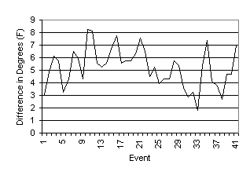 Fig. 9. RWIS
minus ASOS with winds less than 5 knots.
The RWIS sensor recorded an average overnight low temperature 5.21 °F warmer than the ASOS sensor. This is almost 1 °F higher than the two sites had when all the data was included. The t-test revealed a P-value of .03, which implies that there is a significant difference in these two data sets. This will be explained later in the text.
5) Wind speed 5 knots or greater
There were 42 events during the sample where the overnight low temperatures at the sites were observed with the accompanying wind speeds 5 knots or greater. The results of subtracting the ASOS data from the RWIS data can be seen in Fig. 10.
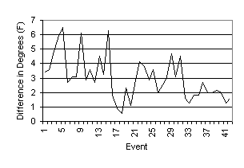 Fig. 10. RWIS minus ASOS
wind speed 5 knots or greater.
The RWIS sensor recorded an overnight low temperature, on average, 3.01 °F warmer than the ASOS sensor. This is 1.26 °F lower than the average for all of the Cedar Rapids data. There is a difference in the comparison of overnight low temperatures if the wind speed is broken down even more. In Fig 10 wind speed increases from left to right. Events 1 through 21 all have wind speeds at the RWIS site of 5 knots. The mean overnight low temperature difference with this data is 3.42 °F. Events 22 through 42 all have wind speeds that are 6 knots or greater. This group of data has a mean difference of 2.59 °F in recorded overnight low temperatures. The two tail t-test showed a P-value of .30. When the winds are 5 knots or greater there is not a significant difference in the data at these two sites.
6) Cedar Rapids conclusion
The RWIS sensor recorded a warmer overnight low temperature on each occasion throughout the sample. In Ames the ASOS sensor possibly recorded lower temperatures because it was at a lower elevation than the RWIS sensor. This is not the case in Cedar Rapids with the RWIS sensor recording higher temperatures than the ASOS sensor even though it is located 18 meters lower.
I believe one possibility for this difference could be explained by concept of an urban heat island. This is when the city would heat up more than the surrounding rural area during the day. In rural areas a large part of the solar energy received is used for the evaporation of water from plants and the soil. In the city there is not as much vegetation or exposed soil, thus the solar energy goes into heating the concrete and buildings. Heat is given off by vehicles and factories in the city, which leads to a warmer temperature. When the overnight low temperature is observed the difference might be explained by that the city got much warmer, than the surrounding area, during the day (Ahrens 1982).
When the observed cloud cover was greater than 50% the two data sets showed no significant difference. On these nights the mean overnight low temperature for the ASOS site, near the airport, went up 1.61 °F. The RWIS sensor, located in the city, mean overnight low temperature only rose .98 degrees. One possible explanation for this is that during the day there was a cloudy sky, which lessened the excessive warming of the city. Then during the night the cloud cover limited radiative cooling. This allowed the ASOS site to remain at a higher overnight low temperature that was closer to the observed overnight temperature at the RWIS site.
There was also no significant difference when the recorded wind speed at both sites was greater than 5 knots. The higher wind velocities would lead to more mixing of the air in the layer near the ground. This could lead to the city being cooler than it normally would be on a calm night or the rural area is warmer than it would normally be. During this study the average overnight low temperature for the RWIS sensor, with winds greater than 5 knots, was 1.5 °F cooler than the average overnight low temperature at the RWIS site with all data. The ASOS average temperature decreased also, but only by .26 °F.
A final reason for the differences observed in the overnight low temperature data could be the distance between the two sites. The RWIS site was eleven kilometers away from the ASOS site.
c. Creston, Iowa
The RWIS sensor has an elevation of 388 meters above
sea level and is located near U.S. Highway 34 east of town. Specifically it is located at latitude 41° 2’ 24” N and longitude 94° 18’ W.
The AWOS sensor has an elevation of 394 meters above sea level and is
located at the airport south of town.
The site is at latitude 41° 1’ 12” N and longitude 94° 18’ W.
These sites are 6.3 kilometers apart with the AWOS sensor being 5.8
meters above the RWIS sensor. The data
obtained was from 1 June 2001 through 7 November 2001.
1) Combined data
There were 116 events during the sample that matched
the criteria for usable data. The
Creston sites were different than the Ames and Cedar Rapids sites. The recorded
overnight low temperature at the AWOS sensor at Creston was always higher then
the recorded overnight low temperature at the RWIS sensor as seen in Fig. 11.
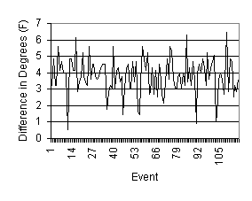
Fig. 11. AWOS overnight low temperature minus the RWIS overnight low temperature.
The
AWOS sensor recorded a mean overnight low temperature 3.79 °F warmer than the recorded RWIS overnight low
temperature. The largest difference was
on 29 October 2001 when the AWOS recoded low temperature was 6.48 °F warmer than the RWIS sensor. On 15 June 2001 the overnight low
temperatures were the closest when the AWOS low temperature was only .54 °F warmer than the RWIS sensor. A two-tail t-test was applied to the data
and it yielded a P-value of .01. This
shows that the differences observed between the two data sets only have a 1%
chance of happening randomly. This
number is lower than the 5% standard.
There is a significant difference in the data for Creston and will be
discussed at the end of the section.
2) Cloud coverage less than 50%
Out of the 116 overnight low temperatures recorded
for Creston 92 occurred when the cloud cover was less than 50%. The overnight low temperature from the RWIS
sensor was subtracted from the overnight low temperature from the AWOS sensor
and can be seen in Fig. 12. 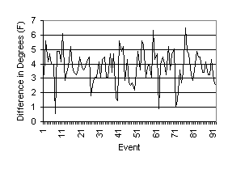
Fig. 12. AWOS minus RWIS cloud coverage less than 50%.
The AWOS sensor recorded an average overnight low temperature that was 3.78 °F warmer than the recorded RWIS overnight low temperature. This difference is nearly the same as the results for all of the Creston data combined. The P-value for these two data sets was .03. There is only a 3% chance that the differences in these data sets occurred randomly. There is a significant difference in these two data sets that will be discussed later in the text.
3) Cloud coverage greater than or equal to 50%
There were only 24 events during the period that
yielded results that had cloud coverage greater than or equal to 50%. This does not meet the requirement for
useful data, thus there was no analysis done.
4) Wind speed less than 5
knots
There were 31 events that occurred where the wind
speed at the time the overnight low temperature was recorded was less than 5
knots. The overnight low temperature
from the RWIS sensor is subtracted from the overnight low temperature from the
AWOS sensor in Fig. 13.  Fig. 13. AWOS minus RWIS wind speed less than 5
knots.
Fig. 13. AWOS minus RWIS wind speed less than 5
knots.
The AWOS overnight low temperature was on average 3.7 °F warmer than the recorded overnight low temperature from the RWIS sensor. This is nearly the same temperature difference as there is when all Creston data is included. A two-tail t-test was performed on these two data sets. There was a 26% chance that the differences observed in these two data sets occurred randomly. There is not a significant difference in the data for Creston when the wind speed recorded is less than 5 knots.
5) Wind speed 5 knots or
greater
Out of the 116 events for Creston 51 occurred when wind speeds at both sites were recorded at 5 knots or greater. The RWIS overnight low temperature subtracted from the AWOS overnight low temperature is shown in Fig. 14. 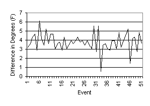 Fig. 14. AWOS minus RWIS with wind speeds 5 knots or greater.
The AWOS sensor recorded, on average, an overnight low temperature 3.79 °F warmer than the overnight low temperature recorded at the RWIS sensor. A two-tail t-test was performed on these two data sets producing a P-value of .08. There is not a significant difference in the two data sets when the wind speeds are greater than 5 knots.
6) Creston conclusion
The study of the Creston sites showed that there was a significant difference in the overnight low temperatures at the RWIS and AWOS sites. During each event the RWIS sensor recorded an overnight low temperature that was lower than the recorded overnight temperature from the AWOS sensor.
Wind speed did not seem to influence the difference in overnight low temperatures. The difference in the overnight low temperatures recorded during windy nights and calm nights were only slightly different than the recorded temperatures for all data.
There was also a significant difference in the data when the cloud cover was less than 50%. Without usable data for cloud cover greater than 50% it is hard to determine the importance of this result.
The RWIS sensor appears to be located in a valley. This could be the reason why the overnight low temperatures recorded here are always lower than the temperatures at the AWOS site. During the evening the cold and denser surface air tends to flow downhill and collect in valleys (Ahrens 1982).
d. Decorah, Iowa
The RWIS sensor has an elevation of 310 meters above sea level and is located near Iowa 9 southeast of town. Specifically it is located at latitude 43° 14’ 24” N and longitude 91° 41’ 24” W. The AWOS sensor has an elevation of 353 meters above sea level and is located at the airport southeast of town. The site is at latitude 43° 16’ 48” N and longitude 91° 43’ 48” W. These sites are separated by 5.5 kilometers with the AWOS site being 43 meters above the RWIS sensor. The data is from 1 June 2001 through 7 November 2001.
1)
Combined
data
There were 113 nights where the overnight low temperatures matched the criteria for usable data at both sites. The AWOS sensor recorded a higher overnight low temperature for each event. The results of subtracting the RWIS overnight low temperature from the AWOS overnight low temperature can be seen in Fig. 15. 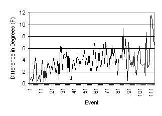 Fig. 15. AWOS overnight low temperature minus RWIS overnight low temperature.
The AWOS sensor recorded, on average, an overnight low temperature 3.82 °F warmer than the overnight low temperature recorded at the RWIS sensor. The greatest difference occurred twice, on consecutive days in November, where there was an 11.52 °F difference between the two sites. During three nights in June the overnight low temperatures at the two sites only differed by .36 °F. When a two-tail t-test was performed on the data sets a P-value of .02 was shown. This is less than the .05 used as the standard, thus there is a significant difference in the data sets. This will be discussed later in the text.
2)
Cloud
coverage less than 50%
Out of the 113 events in the Decorah sample 84 occurred with cloud coverage less than 50%. The results of subtracting the RWIS overnight low temperatures from the AWOS overnight low temperatures can be seen in Fig. 16. 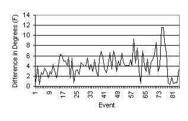 Fig. 16. AWOS minus RWIS cloud coverage less than 50%.
The overnight low temperature at the AWOS site was, on average, 4.15 °F warmer than the overnight low temperature at the RWIS site. The P-value for these two data sets was .03. This number is lower than .05, thus there is a significant difference when the cloud coverage is less than 50%. This difference will be discussed later in the text.
3)
Cloud
coverage greater than or equal to 50%
There were only 28 events where the cloud coverage
was greater or equal to 50%. This does
not meet the criteria for usable data, thus there was no analysis done on this
data.
4)
Wind
speed less than 5 knots
There were 71 events where the wind speed at the two sites near Decorah was less than 5 knots at the time of the overnight low temperature. Subtracting the RWIS overnight low temperature from the AWOS overnight low temperature yielded the following results shown in Fig. 17. 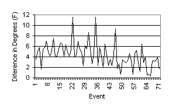 Fig. 17. AWOS minus RWIS with winds less than 5 knots.
The AWOS sensor recorded overnight low temperatures that averaged 4.36 °F warmer than the overnight low temperatures recorded at the RWIS sensor. This temperature is .55 °F warmer than the average of all data at the Decorah sites. After the two-tail t-test a P-value of .04 was calculated. There is a significant difference in the data sets when the wind is less than 5 knots.
5)
Wind
speed 5 knots or greater
There were only 20 cases where the wind speed was 5
knots or greater at both sites when the overnight low temperature
occurred. There was no analysis done on
this data.
6) Decorah conclusion
There was a significant difference in the overnight low temperatures recorded at the two sites. There was not sufficient data for times when the wind speed was 5 knots or greater or when the cloud coverage was greater than 50%. This makes it difficult to determine how much of a factor the wind speed and the cloud coverage were on the differences in the overnight low temperatures. The RWIS site was 43 meters lower than the AWOS site so it appears that the elevation of the sites may be an important factor.
4. Summary
In the introduction I stated that I believed that
there would not be significant differences in the data that was studied. This turned out to be false for three of the
four cities studied. It appears that
wind speed, the amount of cloud coverage, and elevation of the sensors are very
important when comparing overnight low temperatures.
Acknowledgments.
I
would like to thank Dennis Todey and Daryl Herzmann for their help with this
thesis paper.
REFERENCES
Department of Agronomy & Iowa State University, cited 2001: Iowa Environmental Mesonet. [Available on-line from http://www.mesonet.agron.iastate.edu/]
Iowa Department of Transportation, cited 2001: Weatherview. [Available on-line from http://www.weatherview.dot.state.ia.us/]
Maptech, cited 2001: Topo Maps Charts Navigation Software GPS and Online Mapserver. [Available on-line from http://www.maptech.com/index.cfm?BPID=MAP0060030900]
Ahrens, C. D., 1982: Meteorology Today An Introduction To Weather, Climate, and the Environment. 5th ed. West Publishing Company, 591 pp